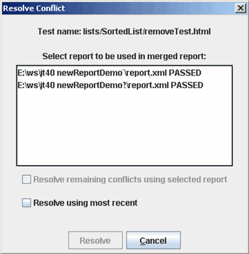

To
merge XML reports generated by the harness, perform the following steps:
To
merge XML reports generated by the harness, perform the following steps:
You can use the Report Converter tool to merge harness generated XML test reports from different work directories into a single report. XML files not generated by the harness are not supported by using the XML Report type in the Test Manager report system.
To
merge XML reports generated by the harness, perform the following steps:
Choose either Tools > Report Converter or Settings > New from the menu bar to launch the Report Converter wizard.
The harness opens the Report Converter wizard.
See Report Converter Wizard for a detailed description of the wizard.
In the XML Input Files panel, specify the directory where the Report Converter Tool writes the merged XML report file.
Specify the harness generated XML reports used as sources for generating the merged XML report file.
You can chose a single source file in the wizard if you are using the Report Converter tool to convert a harness generated XML test report to an output type provided by your test suite.
If you are merging multiple XML test reports, click the Add More button to open additional source file fields.
Click the Next button.
The harness displays the Report Options panel.
In the Report Options panel, specify how conflicts between merged reports are handled.
The default setting is to always handle identical results in the two reports as a conflict.
The option of resolving conflicts using the most recent result is not selected. When the report is created, the tool displays a Resolve Conflict dialog box for each conflict that is detected. Choosing the option of having the tool automatically resolve the conflicts enables to tool to create the report without displaying the Resolve Conflict dialog box.
Choose the report output format.
Click the Create Report(s) button to create the report.
Resolve any conflicts identified by the tool.
If conflicts exist in the reports and the option to resolve conflicts by using the most recent result was not enabled, the tool displays a Resolve Conflict dialog box for each conflict that is detected.

If you only click the Resolve using most recent checkbox and click the Resolve button, the tool resolves the conflict for the specified test and displays the next conflict detected.
If you select a report in the list, the tool enables the Resolve remaining conflicts using selected report checkbox. If you only click the Resolve remaining conflicts using selected report checkbox and click the Resolve button, the tool resolves all conflicts in the generated tests.
Copyright © 2006, 2011, Oracle and/or its affiliates. All rights reserved.